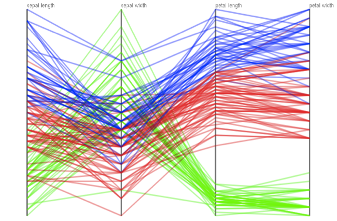
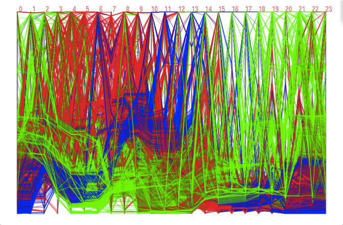
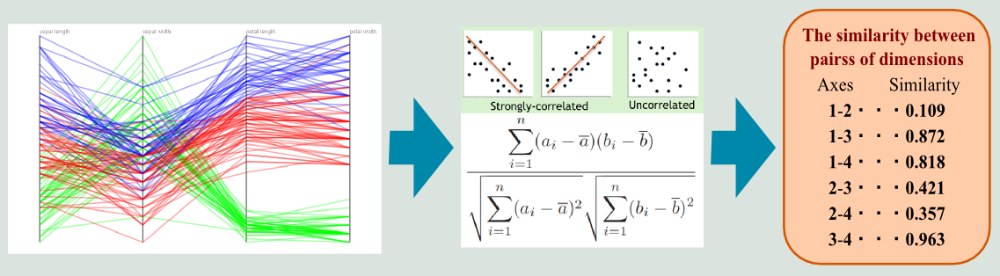
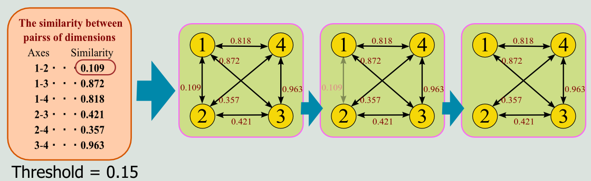
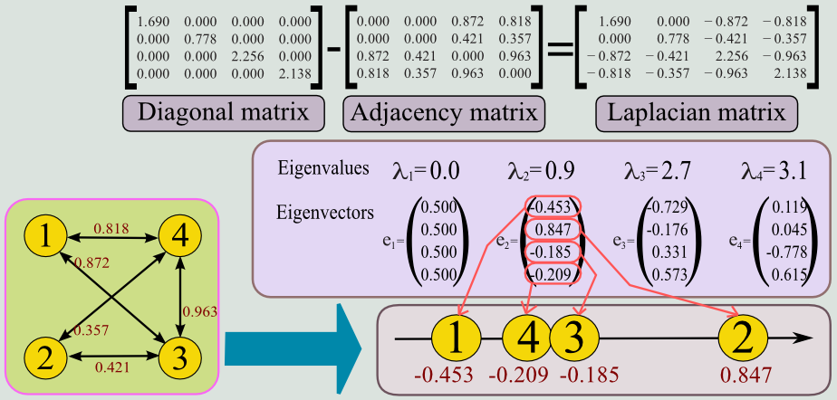
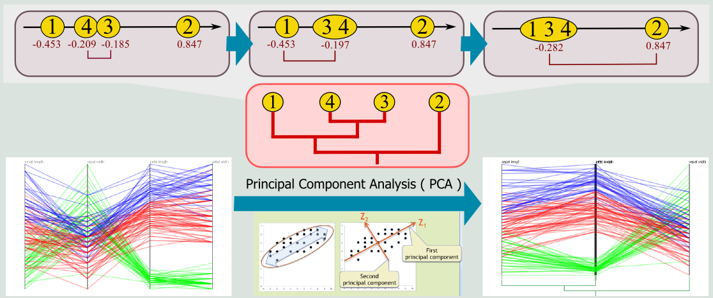
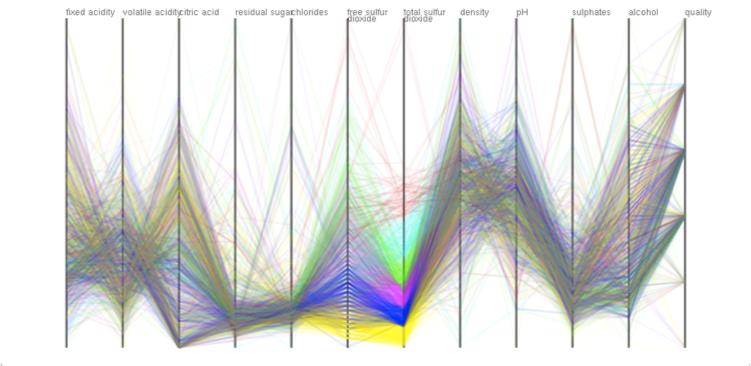

Introduction
The parallel coordinates plots representation is one of the most popular approach to visualizing high-dimensional data, where each sample is plotted as a polyline that intersects multiple vertical coordinate axes arranged in parallel (Figure 1). Nonetheless, this representation usually suffers from visual clutter as the numbers of data samples and data dimensions significantly increase due to the overlap among polyline plots within the limited screen space (Figure 2). The objective of this research is to alleviate the problem of visual clutter, by contracting multiple parallel coordinate axes by referring to the data correlation among them, while preserving the global trends of the original high-dimensional data.
|  |  |
| Figure 1: Parallel coordinates plots of simple 4-dimensional data samples. | Figure 2: Parallel coordinates plots of 24-dimensional data samples. This inevitably incurs visual clutter. |
Our approach
The idea behind our approach is to adaptively merge a cluster of highly-correlated coordinate axes so that we can plot the data samples with respect to a representative set of composite coordinate axes. This is accomplished by computing data correlation between every pair of coordinates as the axis similarity first, and then merging the most similar pair one by one to find a reduced set of coordinate axes. Our approach effectively allows us to visualize the global trends inherent in the high-dimensional data samples with less visual clutter.
Basically, our approach consists of four steps.
First, we compute the similarity among coordinate axes as the absolute values of Pearson's correlation coefficients (Figure 3).
|  |
| Figure 3: Calculating correlation among dimensions |
We then construct a graph to encode the similarity among the coordinate axes, by representing each axes as its node and the similarity as the weight value of the corresponding edge. Note that we keep the graph as sparse as possible by excluding edges that have weight values smaller than the predefined threshold, in order to capture the global trends in data correlation among the coordinate axes (Figure 4).
|  |
| Figure 4: Encoding pairwise correlation as a graph |
As the third step, we conduct spectral analysis of the graph by computing graph Laplacian, which is known as a tool for clustering graph nodes and embed them onto the low-dimensional space. In practice, we use this formulation to compute the optimal ordering of the coordinate axes by projecting the corresponding nodes onto a one-dimensional axis (Figure 5).
|  |
| Figure 5: Reordering Axes via spectral graph analysis |
Finally, by referring to the one-dimensional coordinate of each axis, we merge the closest pair of coordinate axes one by one to adaptively reduce the number of dimensions in the parallel coordinates plots. Note that we obtain data plots along each composite axis, as the data distribution in terms of the primary axis obtained through the principal component analysis (Figure 6).
|  |
| Figure 6: Axis contraction based on dendrogram trees |
Results
We present several experimental results obtained using our proposed approach.
Figure (a) indicates the parallel coordinates plots of the "Wine Quality" data,
which consists of 12 attribute values.
Figure (b) represents the rearranged sequence of parallel coordinate axes using the graph spectral analysis.
The contracted version of the parallel coordinate plots is presented in Figure (c), where the number of axes are reduced to 6 in this case.
We can see that the problem of visual clutter found in the original plots (Figure (a)) has been significantly reduced in the final result while successfully retaining the underlying global trends (Figure (c)).
|  |  |
| (a) | (b) |
 |
| (c) |
| Figure 3: Ploting high-dimensional data samples using the contractible parallel coordinates. (a) Original version of 12-dimensional parallel coordinates plots. (b) Reordered sequence of parallel coordinate axes obtained using the graph spectral analysis. (c) Data plots with respect to a reduced set of parallel coordinates axes, where the number of axes is 6 in this case. |
Furthermore, we animates the edge contraction and development in our implementation when they are invoked by user interactions.
This animated transformation of parallel coordinates plots allows users to visually confirm the transition of global trends inherent in the original high-dimensional data through the dimensionality reduction process.